Current build version is: 8866
Last updated: May 19th, 2024
Click the correct one for the game you are mapping for, or Hammer++ will not start.
Installation instructions are found inside a README.txt file contained in the downloads.
Installation
To update Hammer++ if you had it already installed, download the new version, then simply drag and drop the files over your existing install. When you are asked to overwrite any files, click yes.
Game/Mod not listed?
You might still be able to use Hammer++ with it.
If it's a multiplayer game or mod, use the Source SDK 2013 Multiplayer download.
For singleplayer, try the Source SDK 2013 Singleplayer download.
Warnings
The downloads sometimes get marked as malware by certain antiviruses.
If this happens, you must allow it or add an exception in your antivirus.
I'm unable to do anything about this, sorry for the inconvenience!
Some Windows versions have an issue where the File Open dialog will freeze Hammer++.
Workaround: Open hammerplusplus_settings.ini in Notepad and set FileDialogHack to false.
 


Warning
CS:GO is not supported and is frozen on build 8864.
It is left here for historical purposes. Consider using the Garry's Mod version instead.
Garry's Mod supports loading content from the newer games, including CS:GO.
Unofficial games or mods tested
- Portal 2: Use the Garry's Mod version temporarily.
- Mapbase: Works using SDK 2013 Singleplayer version.
- Momentum Mod: Likely to work using CSGO version.